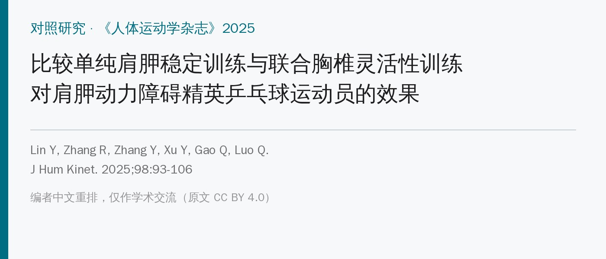
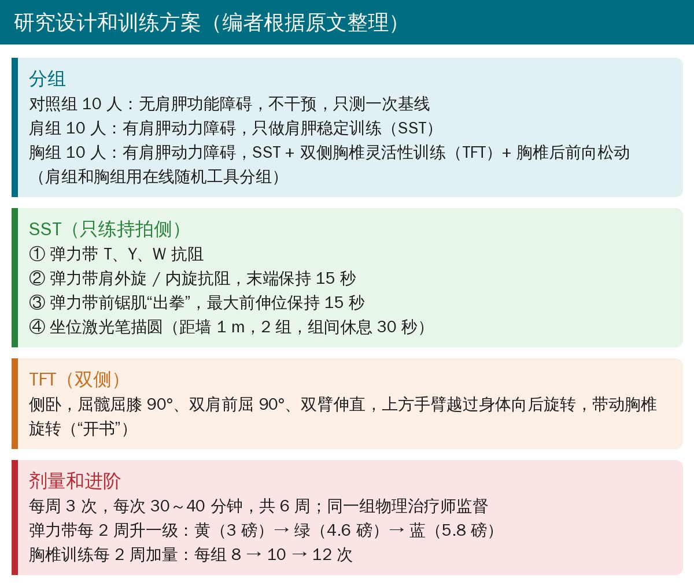
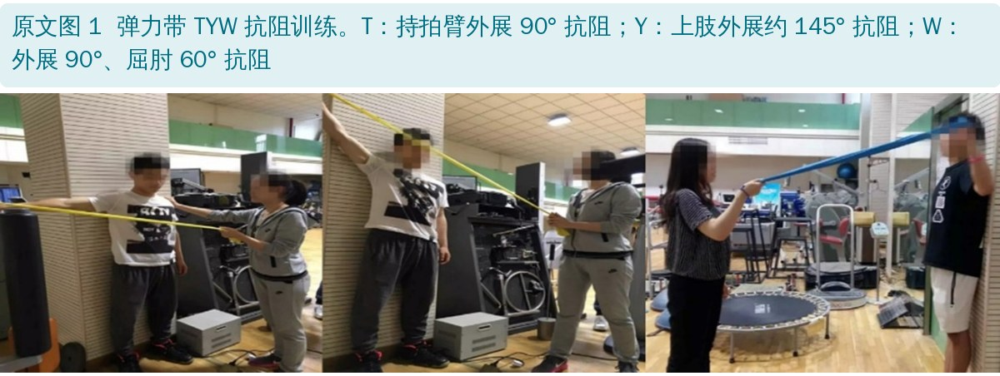
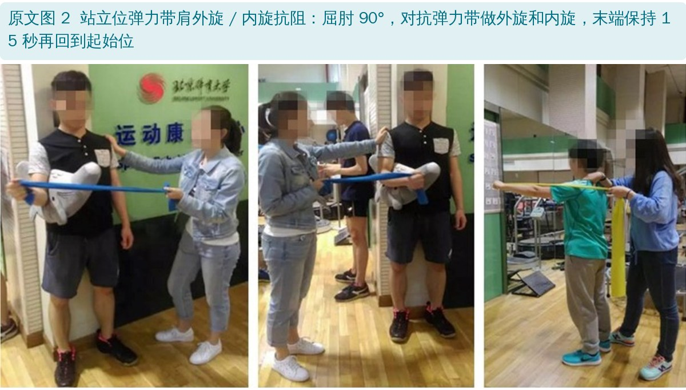
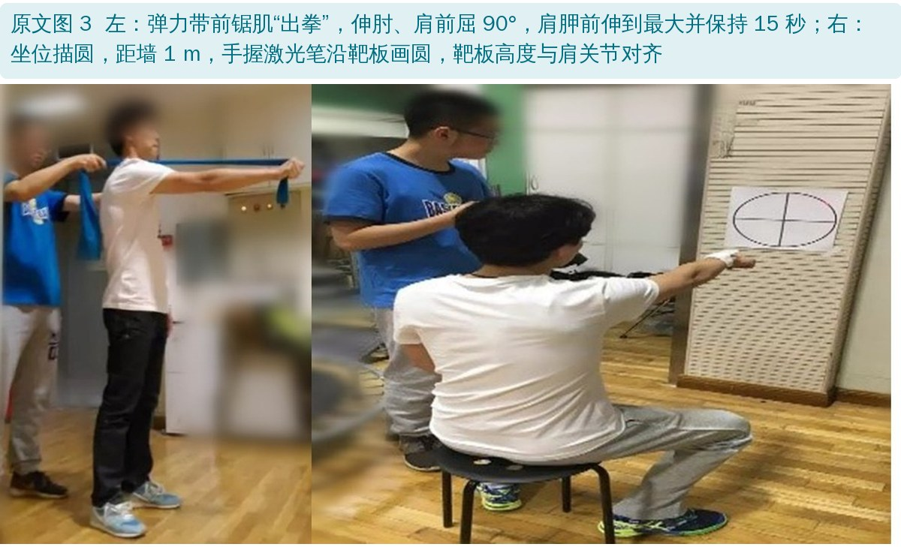
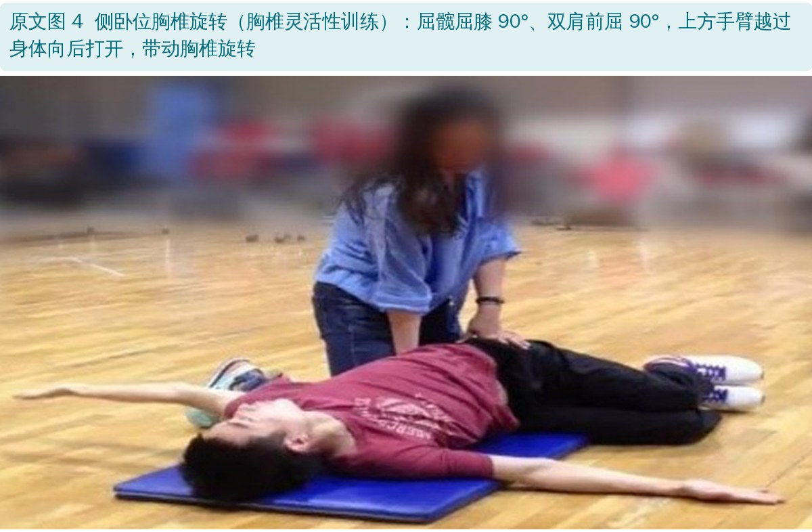
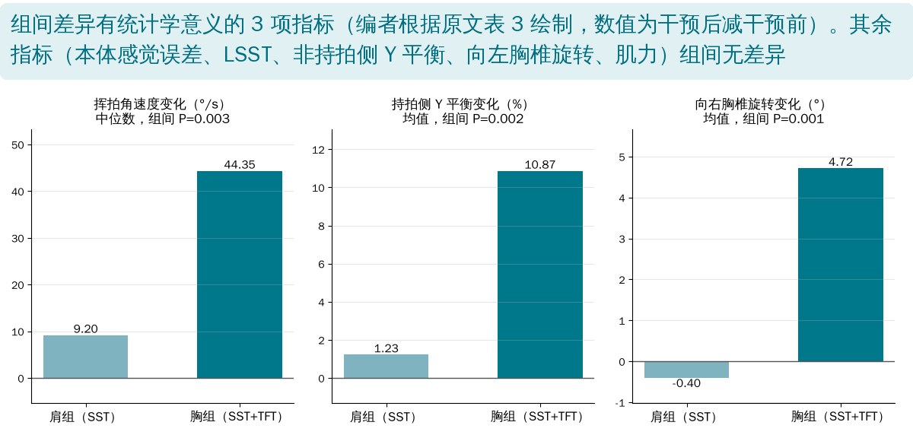

🔖原文信息（编者中文重排）
📚 文献信息
▪ Lin Y, Zhang R, Zhang Y, Xu Y, Gao Q, Luo Q. Comparing the Efficacy of Solely Scapular Stability Training versus Combined Thoracic Flexibility Training in Elite Table Tennis Players with Scapular Dyskinesis. J Hum Kinet. 2025;98:93-106. doi:10.5114/jhk/196512
▪ 作者单位：四川大学华西医院康复医学中心、北京体育大学运动医学与康复学院、南方医科大学第十附属医院（东莞市人民医院）等
▪ 研究类型：三组对照研究（两组干预组随机分组，对照组为无功能障碍的运动员），30 名精英乒乓球运动员，训练 6 周
乒乓球对肩关节的活动范围和灵活性要求很高，大约五分之一的运动员有肩部问题。其中常见的是肩胛动力障碍（SD）：肩胛骨的位置和运动异常，会让肩痛风险增加 43%，还可能削弱肩袖、缩小肩峰下间隙。
肩胛稳定训练（SST）是处理 SD 的主流方法。但作者认为治疗常常忽略了整个肩关节的生物力学链条：乒乓球运动员普遍胸椎后凸偏大，而胸部牵伸、胸椎手法能改善肩活动度和功能。于是问题来了：在肩胛稳定训练之外再加胸椎灵活性训练（TFT），是不是效果更好？

🔖研究设计和训练方案（编者根据原文整理）
• 35 人报名，30 人入组（2 人有肩部手术史、3 人有背痛被排除），全部完成干预
• 纳入：国家二级运动员及以上，训练 ≥10 年，在地区比赛中获得过前三名，每周训练 ≥3 次，右手持拍、以正手弧圈快攻结合为主打法
• SD 判定：肩胛辅助试验、肩胛后缩试验、肩胛动力障碍试验均阳性，但没有症状
• 排除：肩关节脱位史、6 个月内肩 / 背 / 颈手术史、颈背功能障碍症状、肩胛骨骨折、神经损伤导致的肩胛功能障碍等
• 分组：10 名没有肩胛功能障碍的运动员作对照组；20 名有 SD 的运动员用在线随机工具分到肩组和胸组，各 10 人
| 组别 | 年龄（岁） | 身高（cm） | 体重（kg） | 训练年限（年） | 训练频率（次 / 周） | 每次训练时长（小时） |
|---|---|---|---|---|---|---|
| 对照组（10 人） | 20.55 ± 1.64 | 172.00 ± 8.91 | 63.55 ± 11.02 | 12.09 ± 2.96 | 4.09 ± 0.70 | 2.32 ± 0.56 |
| 肩组（10 人） | 20.33 ± 1.73 | 174.67 ± 8.92 | 64.28 ± 10.18 | 12.33 ± 2.20 | 4.67 ± 1.12 | 2.06 ± 0.39 |
| 胸组（10 人） | 20.70 ± 2.83 | 168.40 ± 7.62 | 60.00 ± 8.89 | 13.70 ± 3.14 | 4.60 ± 0.70 | 2.05 ± 0.28 |
原文表 1：三组参与者的人口学资料（中文翻译）
• 胸椎旋转活动度：站立、屈髋 90°、双臂交叉，用 microFET3 分别在 T1 和 T12 测旋转角度，胸椎活动度 = T12 读数 − T1 读数
• 上肢 Y 平衡测试（UQ-YBT）：俯卧撑姿势，一侧手向前、后内、后外三个方向尽量远伸；三个方向的距离之和除以 3 倍上肢长度
• 肩关节本体感觉：多关节系统（MJS）测平均轨迹误差（ATE，实际与设定距离的偏差百分比），越小越好
• 挥拍角速度和肌力：BTE Primus RS，60°/s 等速测正手弧圈动作的最大肌力；再以 25% 最大肌力为阻力模拟正手弧圈，测角速度和功率
• 肩胛外侧滑动试验（LSST）：在三个体位（双臂自然下垂、双手叉腰、双臂外展 90°）测肩胛下角到同水平棘突的距离，两侧相差 ≥1.5 cm 为阳性；文中报告的是两侧差值
两组都由同一组物理治疗师监督，每周 3 次、每次 30～40 分钟，共 6 周。

🔖原文图 1：弹力带 TYW 抗阻训练
• T：持拍臂外展 90°，对抗弹力带
• Y：上肢外展约 145°，对抗弹力带
• W：持拍臂外展 90°、屈肘 60°，对抗弹力带

🔖原文图 2：弹力带肩外旋 / 内旋抗阻
• 屈肘 90°，对抗弹力带做肩外旋和内旋，末端保持 15 秒再回到起始位

🔖原文图 3：前锯肌“出拳”和坐位描圆
• 前锯肌“出拳”：伸肘、肩前屈 90°，肩胛前伸到最大，保持 15 秒，再顺着弹力带回到起始位
• 坐位描圆：坐在离墙 1 m 处，手臂前伸到肩高、掌心向下握拳，一只手拿激光笔沿靶板画圆，靶板高度与肩关节对齐；做 2 组，组间休息 30 秒
• 弹力带每 2 周升一级：黄色（3 磅）→ 绿色（4.6 磅）→ 蓝色（5.8 磅）

🔖原文图 4：侧卧位胸椎旋转
• 侧卧，屈髋屈膝 90°、双肩前屈 90°、双臂伸直，上方手臂越过身体向后打开，带动胸椎旋转（也就是常说的“开书”）
• 训练量每 2 周增加一次：每组 8 次 → 10 次 → 12 次
• 胸组另外还接受了胸椎后前向松动（原文没有写具体手法和剂量）
• 两组都有的改善：持拍侧本体感觉误差下降（肩组中位数 43.0% → 33.5%，胸组 42.5% → 32.0%）、挥拍角速度上升、LSST 两侧差值缩小
• 只有胸组有的改善：两侧 Y 平衡（持拍侧 79.6% → 91.5%）、向右胸椎旋转（22.9° → 28.2°）
• 组间差异：胸组的挥拍角速度、持拍侧 Y 平衡、向右胸椎旋转提高更多；本体感觉、LSST、向左胸椎旋转、肌力组间无差异
• 肌力没有变化：两组的最大和平均向心、离心力量都没有显著改变

🔖组间差异有统计学意义的 3 项指标（编者根据原文表 3 绘制）
作者结论：两种训练都能改善肩胛稳定性，但联合胸椎灵活性训练在挥拍角速度、Y 平衡和胸椎旋转上有额外好处。
• 胸组不只多了 TFT：还多了胸椎后前向松动和双侧训练，训练总量更大；额外效果来自哪一部分分不开
• 对照组不是真正的对照：对照组是没有 SD 的运动员，而且只测了一次基线，没有复测。所以无法排除学习效应、正常训练和赛季带来的变化——两组干预组的“改善”可能有一部分本来就会发生
• SD 都是无症状的：入组的是没有肩痛的运动员，结果不能直接推到肩痛患者
• LSST 的变化很小：按 1.5 cm 才算阳性，而三组的两侧差值中位数都在 1 cm 以下；从 0.67 cm 降到 0.29 cm，可能在测量误差内（作者也承认 LSST 信度有争议）
• 样本小、未设盲、多重比较：每组 10 人，样本量依据只是引用了一篇文献；治疗师和运动员都没设盲；比较了十几个指标，没有校正
• “表现提升”是实验室指标：挥拍角速度是在 BTE 设备上以 25% 最大肌力模拟测得，不等于比赛中的球速或胜率
• 摘要和表 2 的 P 值不一致：摘要说肩组 LSST 位置 1、2、3 的 P 值为 0.008、0.008、0.009，表 2 和结果正文是 0.005、0.008、0.009
• 表 2 显著性标记漏了：肩组 LSST 位置 1 的 P = 0.005，却没有标“有显著差异”的△
• 表 3 四分位数颠倒：肩组角速度变化写成“9.20（4.93, 2.95）”，第 75 百分位数（2.95）比第 25 百分位数（4.93）还小，也比中位数小
• 表 3 离心最大力量的数据是抄来的：ECCmax 两组的变化值（4.70 ± 62.67、14.40 ± 55.86）和上一行 CONmax 完全相同，而且没有检验结果；表中还多出一行孤立的“胸组 −1.95 ± 1.68”
• Y 平衡测试的信度写成了营养筛查工具：方法部分说“NRS-2002 有极好的测试者间信度”，NRS-2002 是营养风险筛查量表，这里应指 UQ-YBT
• 讨论里的 P 值写错：讨论说两组本体感觉误差下降“p = 0.05”，表中是 0.005
• 讨论夸大了胸椎旋转结果：讨论说胸组“左、右胸椎旋转都显著改善”，但向左旋转中位数 26.50° → 26.50°，P = 0.541
• 讨论说“两组 Y 平衡都提高”：肩组持拍侧（P = 0.878）和非持拍侧（P = 0.173）都不显著
• 讨论提到“握力”：说提高胸椎灵活性能增强握力和速度，但研究没有测握力
• 小错：“屈肘 90°C”（摄氏度）；“positions two and three”写成“two and three years”；“forehand”写成“forehead”；表 4 对照组 ECC/CONave 四分位数“11.34”应为 1.34
• 胸椎训练量描述不清：“每 2 周从每组 8 次增加到 10 次，共 12 次”，组数和总量都没说清楚
• 处理肩胛动力障碍，顺手看看胸椎：胸椎旋转、后凸都会影响肩胛位置；侧卧“开书”简单易做，可以作为热身或家庭训练
• SST 四件套：弹力带 TYW、肩外旋 / 内旋、前锯肌出拳、激光笔描圆（本体感觉和控制），每 2 周升一级弹力带
• 乒乓球等单侧挥拍运动：除了持拍侧，也要关注两侧胸椎旋转是否对称，这篇只有向右（持拍侧方向）旋转有改善
• 评估别只靠 LSST：差值不到 1 cm 的变化意义有限，结合肩胛动力障碍试验、Y 平衡和运动表现指标一起看
• 别对“表现提升”期望太高：本研究证据较弱，挥拍角速度和比赛表现之间还隔着很远
| 指标 | 肩组 前（中位数） | 肩组 后（中位数） | Z / p | 胸组 前（中位数） | 胸组 后（中位数） | Z / p |
|---|---|---|---|---|---|---|
| 持拍侧平均轨迹误差（%） | 43.00 | 33.50△ | −2.807 / 0.005 | 42.50 | 32.00△ | −2.803 / 0.005 |
| 角速度（°/s） | 440.15 | 455.70△ | −2.805 / 0.005 | 440.50 | 479.20△ | −2.803 / 0.005 |
| LSST 位置 1（cm） | 0.67 | 0.29 | −2.805 / 0.005 | 0.35 | 0.37 | −1.785 / 0.074 |
| LSST 位置 2（cm） | 0.87 | 0.52△ | −2.670 / 0.008 | 0.92 | 0.38△ | −2.803 / 0.005 |
| LSST 位置 3（cm） | 0.83 | 0.47△ | −2.601 / 0.009 | 0.80 | 0.60△ | −2.666 / 0.008 |
| 非持拍侧 Y 平衡（%） | 83.21 | 84.61 | −1.362 / 0.173 | 78.55 | 90.08△ | −2.803 / 0.005 |
| 持拍侧 Y 平衡（%） | 79.53 | 82.03 | −0.153 / 0.878 | 79.61 | 91.51△ | −2.803 / 0.005 |
| 向左胸椎旋转（°） | 26.33 | 24.83 | −0.153 / 0.878 | 26.50 | 26.50 | −0.612 / 0.541 |
| 向右胸椎旋转（°） | 25.17 | 27.17 | −0.210 / 0.833 | 22.92 | 28.17△ | −2.701 / 0.007 |
| 最大向心力量（N） | 163.00 | 164.50 | −0.459 / 0.646 | 167.50 | 187.50 | −0.866 / 0.386 |
| 最大离心力量（N） | 293.50 | 268.50 | −0.255 / 0.799 | 276.00 | 263.00 | −0.459 / 0.646 |
| 平均向心力量（N） | 140.90 | 159.35 | −1.376 / 0.169 | 143.45 | 150.15 | −0.968 / 0.333 |
| 平均离心力量（N） | 241.40 | 210.95 | −0.051 / 0.959 | 217.3 | 228.75 | −0.663 / 0.508 |
| 最大离心 / 向心比 | 1.52 | 1.46 | −0.561 / 0.575 | 1.57 | 1.60 | −0.459 / 0.646 |
| 平均离心 / 向心比 | 1.48 | 1.59 | −0.357 / 0.721 | 1.52 | 1.45 | −0.918 / 0.359 |
原文表 2：各项测试结果，秩和检验（中文翻译）
△ 表示干预前后有显著差异（p < 0.05）。
| 指标 | 肩组变化 | 胸组变化 | 差值（95% CI） | t / Z | p |
|---|---|---|---|---|---|
| 持拍侧平均轨迹误差（%） | −13.00（−21.75, −1.75） | −10.50（−17.50, −5.50） | 0.01（−11.00, 8.00） | −0.040ᵇ | 0.970 |
| 角速度（°/s） | 9.20（4.93, 2.95） | 44.35（24.53, 86.75）* | −29.00（−56.30, −7.00） | −2.950ᵇ | 0.003 |
| LSST 位置 1（cm） | −0.17（−0.28, −0.03） | −0.12（−0.73, −0.05） | 0.02（−0.21, 0.48） | −0.380ᵇ | 0.705 |
| LSST 位置 2（cm） | −0.23（−0.40, −0.17） | −0.27（−0.80, −0.06） | 0.03（−0.17, 0.49） | −0.300ᵇ | 0.762 |
| LSST 位置 3（cm） | −0.29（−0.62, −0.22） | −0.09（−0.32, −0.04） | −0.20（−0.40, 0.07） | −1.740ᵇ | 0.082 |
| 非持拍侧 Y 平衡（%） | 7.70（−1.61, 9.81） | 8.94（4.43, 14.19） | −3.58（−13.38, 3.15） | −1.060ᵇ | 0.290 |
| 持拍侧 Y 平衡（%） | 1.23 ± 5.92 | 10.87 ± 5.73* | −9.63（−15.11, −4.16） | −3.700ᵃ | 0.002 |
| 向左胸椎旋转（°） | 0.10 ± 3.10 | 1.57 ± 6.00 | −1.47（−5.95, 3.02） | −0.690ᵃ | 0.501 |
| 向右胸椎旋转（°） | −0.40 ± 2.8 | 4.72 ± 3.25* | −5.12（−7.97, −2.27） | −3.770ᵃ | 0.001 |
| （原表此处多出一行） | −1.95 ± 1.68 | ||||
| 最大向心力量（N） | 4.70 ± 62.67 | 14.40 ± 55.86 | −9.70（−65.48, 46.08） | −0.37ᵃ | 0.719 |
| 最大离心力量（N） | 4.70 ± 62.67 | 14.40 ± 55.86 | |||
| 平均向心力量（N） | 16.40 ± 31.81 | 13.18 ± 42.57 | 3.22（−32.08, 38.52） | 0.19ᵃ | 0.85 |
| 平均离心力量（N） | 3.76 ± 67.00 | 8.81 ± 56.38 | −5.05（−63.23, 53.13） | −0.18ᵃ | 0.857 |
| 最大离心 / 向心比 | −0.04（−0.89, 0.15） | −0.08（−0.17, 0.21） | −0.01（−0.76, 0.22） | 0.01ᵇ | 0.99 |
| 平均离心 / 向心比 | −0.04（−0.32, 0.30） | −0.13（−0.38, 0.20） | 0.09（−0.31, 0.49） | −0.42ᵇ | 0.677 |
原文表 3：两组干预前后变化量的比较（中文翻译）
数值为均值 ± 标准差或中位数（P25, P75）；差值为均值差或中位数差（95% CI）；ᵃ t 检验，ᵇ 秩和检验；* 与肩组相比有显著差异（p < 0.05）。变化量 = 干预后 − 干预前。
| 指标 | 对照组 | 肩组 | 胸组 | F / H | p（三组 / 肩 vs 对照 / 胸 vs 对照） |
|---|---|---|---|---|---|
| 持拍侧平均轨迹误差（%） | 32.00¹（29.00, 39.25） | 43.00¹#（36.75, 50.25） | 42.50¹#（33.00, 51.50） | 7.849ᵈ | 0.020 / 0.039 / 0.054 |
| 角速度（°/s） | 457.00¹（446.50, 493.00） | 440.15¹#（429.42, 448.75） | 440.50¹#（350.50, 460.75） | 6.125ᵈ | 0.047 / 0.025 / 0.043 |
| LSST 位置 1（cm） | 0.25¹（0.09, 0.56） | 0.67¹（0.35, 1.34） | 0.35¹（0.16, 1.40） | 4.736ᵈ | 0.094 |
| LSST 位置 2（cm） | 0.47 ± 0.25（0.32, 0.62） | 0.84 ± 0.48（0.55, 1.13） | 1.06 ± 0.72（0.66, 1.58） | 3.281ᶜ | 0.053 |
| LSST 位置 3（cm） | 0.35 ± 0.25（0.21, 0.52） | 0.91 ± 0.62#（0.57, 1.34） | 0.84 ± 0.49#（0.56, 1.13） | 4.048ᶜ | 0.029 / 0.015 / 0.030 |
| 非持拍侧 Y 平衡（%） | 80.23 ± 7.3（75.84, 84.77） | 79.97 ± 9.91（73.49, 85.56） | 79.07 ± 10.49（72.57, 85.45） | 0.043ᶜ | 0.958 |
| 持拍侧 Y 平衡（%） | 86.41 ± 9.00（81.13, 92.09） | 78.88 ± 10.05（72.82, 84.86） | 78.31 ± 9.10（72.55, 84.27） | 2.316ᶜ | 0.118 |
| 向左胸椎旋转（°） | 23.73 ± 4.49（21.00, 26.43） | 26.43 ± 2.90（24.75, 28.36） | 25.77 ± 3.36（23.58, 27.81） | 1.489ᶜ | 0.243 |
| 向右胸椎旋转（°） | 23.07 ± 4.26（20.43, 25.75） | 25.40 ± 3.37（23.33, 27.53） | 24.18 ± 4.25（21.47, 27.00） | 0.860ᶜ | 0.435 |
| 最大向心力量（N） | 176.50 ± 26.80（161.35, 194.99） | 173.10 ± 36.92（152.10, 196.75） | 176.20 ± 40.48（151.17, 201.31） | 0.029ᶜ | 0.972 |
| 最大离心力量（N） | 226.10 ± 50.14（197.01, 259.28） | 286.50 ± 70.47（245.28, 330.70） | 270.70 ± 48.62（241.34, 302.15） | 2.990ᶜ | 0.067 |
| 平均向心力量（N） | 153.05 ± 19.60（141.85, 165.35） | 147.57 ± 39.80（121.81, 171.47） | 147.30 ± 39.91（123.60, 173.65） | 0.089ᶜ | 0.915 |
| 平均离心力量（N） | 217.55¹（195.48, 328.88） | 241.40¹（167.88, 269.82） | 217.30¹（190.83, 271.88） | 0.359ᵈ | 0.836 |
| 最大离心 / 向心比 | 1.30 ± 0.29（1.12, 1.47） | 1.69 ± 0.48（1.43, 2.00） | 1.56 ± 0.22（1.43, 1.70） | 3.315ᶜ | 0.052 |
| 平均离心 / 向心比 | 1.61¹（11.34, 1.87） | 1.48¹（1.34, 1.78） | 1.52¹（1.32, 1.83） | 0.304ᵈ | 0.859 |
原文表 4：三组干预前各项测试结果（中文翻译）
¹ 中位数（括号内为 P25, P75），其余为均值 ± 标准差（括号内为 95% CI）；ᶜ F 值；ᵈ H 值；p 依次为三组总体比较、肩组与对照组比较、胸组与对照组比较；# 与对照组相比有显著差异。
欢迎关注悦美力公众号，获取更多物理治疗的专业知识！
📄参考文献：
Lin Y, Zhang R, Zhang Y, Xu Y, Gao Q, Luo Q. Comparing the Efficacy of Solely Scapular Stability Training versus Combined Thoracic Flexibility Training in Elite Table Tennis Players with Scapular Dyskinesis. J Hum Kinet. 2025;98:93-106. doi:10.5114/jhk/196512
原文以 CC BY 4.0 许可发表。本文为学术交流用的中文解读：原文图 1～4 原样引用并加中文图注，表 1～4 为中文翻译，设计卡和结果图为编者根据原文整理绘制。